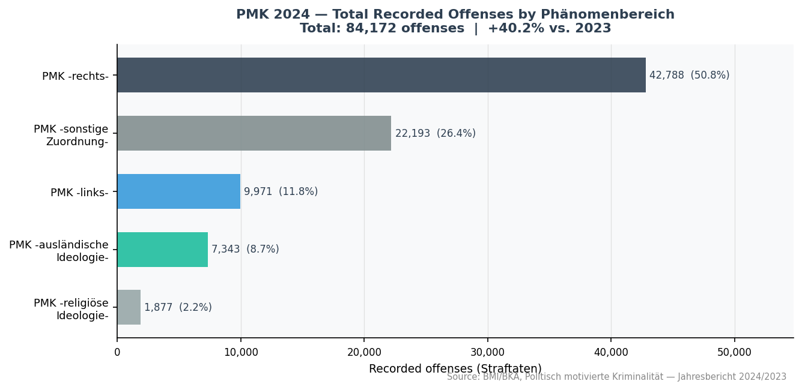
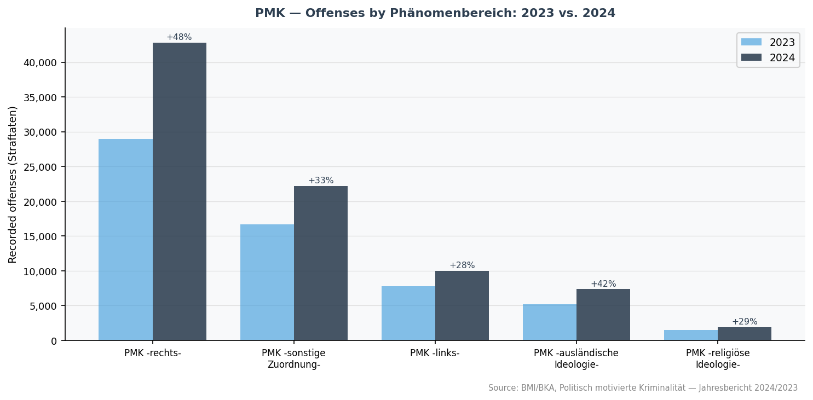
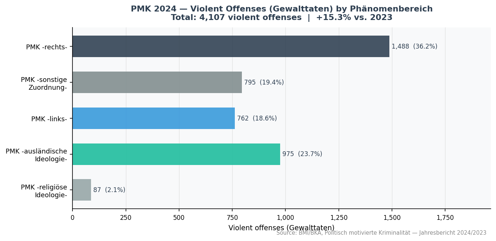
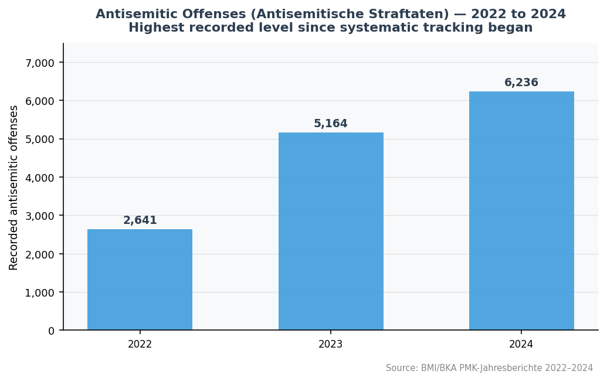

Domain
Public Administrative Data
Source
BMI / BKA (official aggregate)
Period covered
2022–2024
Language
Python 3.13
Status
Public-data case study
Validation
4 checksums passing
Data use & ethical note
This project uses only publicly available, aggregated official statistics from the German Federal Ministry of the Interior (BMI) and the Federal Criminal Police Office (BKA). It does not involve personal data, operational intelligence, scraping of extremist content, or identification of individuals or groups. The aim is to demonstrate careful statistical analysis and transparent visualisation of public administrative data — the same type of analysis published routinely in government statistics reports.
Role relevance
Demonstrates descriptive analysis of official aggregated administrative data, careful source documentation, transparent visualisation, and ethical handling of sensitive public statistics.
Summary: This dashboard constructs a documented dataset from official BMI/BKA PMK publications, validates figures against published totals (checksum verified), and produces four descriptive charts covering 2024 composition, 2023–2024 comparison, violent offenses by category, and a three-year antisemitic offenses trend. All figures are reproducible from code.
Key 2024 Figures (Official BMI/BKA)
Note: The figures below are police-recorded offense counts from the official BMI/BKA PMK annual report for 2024. They measure recorded offenses, not underlying crime prevalence. Changes over time may reflect reporting behaviour, enforcement priorities, or classification changes, as well as actual incident patterns.
84,172
+40.2% vs. 2023
Total PMK offenses recorded (2024)
4,107
+15.3% vs. 2023
Violent PMK offenses (Gewalttaten, 2024)
20,074
≈ 24% of total
Offenses using the internet as means (2024)
6,236
+20.8% vs. 2023
Antisemitic offenses (2024)
Visualisations
All charts are generated programmatically from the documented dataset. Source annotations are embedded. No manual editing of outputs.

Fig. 1 — PMK 2024: total recorded offenses by Phänomenbereich. The five official categories sum to exactly 84,172 (checksum verified against published BMI/BKA total). PMK -sonstige Zuordnung- (26.4%) is a residual category for offenses not clearly attributable to a specific phenomenon area.

Fig. 2 — PMK offenses by Phänomenbereich: 2023 vs. 2024. All five categories increased year-on-year. The largest absolute increase is in PMK -rechts- (+13,843 offenses). The largest relative increase in total offenses is also in PMK -rechts- (+47.8%), though PMK -ausländische Ideologie- saw the largest increase in violent offenses (+98.6%), linked in part to the Middle East conflict.

Fig. 3 — Violent PMK offenses (Gewalttaten) by Phänomenbereich, 2024. The distribution of violent offenses differs markedly from total offenses: PMK -ausländische Ideologie- accounts for 23.7% of violent offenses but only 8.7% of total offenses.

Fig. 4 — Antisemitic offenses (Antisemitische Straftaten) 2022–2024. Three-year trend from official BMI/BKA figures for each year. The 2023 increase from 2022 was proportionally larger; the 2024 figure is the highest in this three-year window. The BMI/BKA 2024 report describes the overall PMK total as the highest since the statistics were introduced in 2001.
Data Sources
All data was manually transcribed from official BMI and BKA publications and press releases, which are the primary sources for all figures. BKA and BMI web servers block automated access; all values were extracted from the official annual press releases. The bpb.de article listed below was used only for secondary cross-verification — it is not a primary source. All figures were confirmed across at least two sources before inclusion.
| Source | Period | Used for |
|---|
| BMI/BKA PMK-Jahresbericht 2024 (joint press release, 20 May 2025) |
2024 |
All 2024 headline figures; all 2024 category breakdowns |
| BMI/BKA PMK-Jahresbericht 2023 (joint press release, 21 May 2024) |
2023 |
All 2023 baseline figures; 2023 category breakdowns |
| BKA PMK-Jahresbericht 2022 |
2022 |
2022 antisemitic offenses baseline (2,641) |
| bpb.de — Politisch motivierte Kriminalität 2024 (secondary, cites BMI/BKA) |
2024 |
Cross-verification of all 2024 figures |
Dataset Construction
Three raw CSV files were constructed by hand from official sources and are fully documented with source URLs, access dates, and derivation notes. The cleaning script validates checksums before any analysis proceeds.
1
Manual transcription (data/raw/)
Three CSVs built from official BMI/BKA publications: headline totals (2023–2024), category breakdown (2023–2024), and subcategory data (antisemitic offenses 2022–2024, hate crime, islamophobic offenses). Each row carries source URL and access date.
2
Validation and cleaning (scripts/build_dataset.py)
Loads raw files, runs four checksum assertions (2023 and 2024 total offenses; 2023 and 2024 violent offenses), computes percentage shares and year-on-year changes, and saves processed CSVs. Script exits with an error if any checksum fails.
3
Figure generation (scripts/make_figures.py)
Reads processed CSVs and generates four matplotlib figures with source annotations. Figures are saved to outputs/figures/ and copied to the website images directory. No manual post-processing.
Limitations
- Recorded offenses, not prevalence. PMK statistics count police-recorded offenses. Changes over time may reflect enforcement priorities, reporting behaviour, classification changes, or actual incident patterns — these cannot be disentangled from aggregate totals alone.
- Category definitions. The PMK Phänomenbereich classification has evolved. Comparisons across years longer than those covered here require careful verification that definitions have not changed.
- Residual category. PMK -sonstige Zuordnung- (22,193 offenses in 2024; 26% of total) is a large residual that limits interpretation of the breakdown.
- Short time series. The dataset covers 2023–2024 at the category level and 2022–2024 for antisemitic offenses only. A longer series requires manual compilation from prior annual reports.
- Derived values. The 2023 PMK-rechts violent offense figure (1,270) is derived arithmetically from confirmed totals; the 2023 internet offense figure (15,490) is back-calculated from the stated percentage change. Both are clearly flagged in the data documentation.
- No causal interpretation. This analysis is purely descriptive. It does not identify causes, make predictions, or support individual-level or operational inference of any kind.
Reproducibility
The full pipeline runs with two commands from the project root:
pip install -r requirements.txt
make all # build_dataset.py → make_figures.py
The build step will exit with an error if any checksum fails, preventing figure generation from invalid data. All source URLs and access dates are stored in the raw CSV files alongside each data point.
Tools
Python 3.13
pandas
matplotlib
numpy
Git
Makefile
Next Steps
- Add prior years (2020–2022) from historical BKA annual reports to extend the time series and show longer trends
- Add Bundesland-level data if consistent state-level official aggregate data is publicly available
- Add a data freshness indicator that warns when the dataset has not been updated for more than 12 months
- Explore an automated ingestion path if BKA publishes machine-readable data formats in future